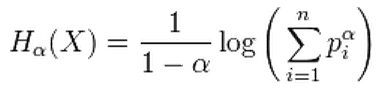
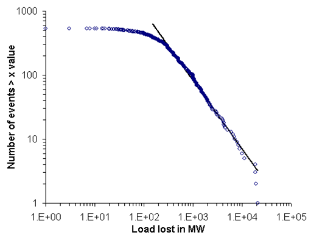

-
AboutOpen or Close
If you are interested in being involved in any of these projects, please contact us.
- Intelligent Transportation PlanningOpen or Close
The Travelling Salesman Problem (TSP) is one of the most well-researched logistics planning problems. TSPs arise in a wide variety of transportation and logistics applications such as the delivery of farming equipment from one location to another to test soil, arranging school bus routes to pick up children in a school district, handling material in a warehouse, scheduling interviews between tour brokers and vendors of the tourism industry, and the design of global navigation satellite systems, among others. The project will draw on evolutionary computation and local search techniques to propose a more systematic way of comparing TSP solvers.

Image source: Wikimedia Commons
- SHADE - Games for HealthOpen or Close
The SHADE project is developing the first serious computer game that directly addresses depression, binge drinking, and related issues. There is a tremendous opportunity to intervene using computer games that are designed to address key health behaviours found in adolescent and young adult populations. Aside from the significant public health implications of this innovation, there is already considerable commercial interest in the SHADE gaming prototype from the United Kingdom and the United States of America.
- Analysis of Heart Rate Variability using Multi Spectral Entropy MeasuresOpen or Close
Heart rate can be measured with simple equipment and does not provide the full ECG signal. However, there is much information in the beat to beat (RR) interval. Heart rate variability has been analysed with time- and frequency-domain methods, but more recent nonlinear analysis has shown an increased sensitivity for identifying risk of future morbidity and mortality in cardiac patients.
Image source: Project authors
- The Virtual PharmacyOpen or Close
This project investigates the use of virtual technologies for providing training experiences for pharmacy students. It incorporates the use of online walkthroughs and 3D models to provide students with a means for interacting in pharmacy settings prior to placement. This work is in collaboration with the School of Pharmacy.
Image source: Wikimedia Commons
- Finding patterns in large scale disturbances of the US electricity networkOpen or Close
A large electricity network can be analyzed and understood from a complex systems viewpoint. Power systems are believed to be examples of systems with Self Organizing Criticality. That is, such systems may evolve towards a critical point. The implications are that large blackouts are an inevitable feature of such networks.
Image source: Project authors
- Intelligent Transportation PlanningOpen or Close
| Next |